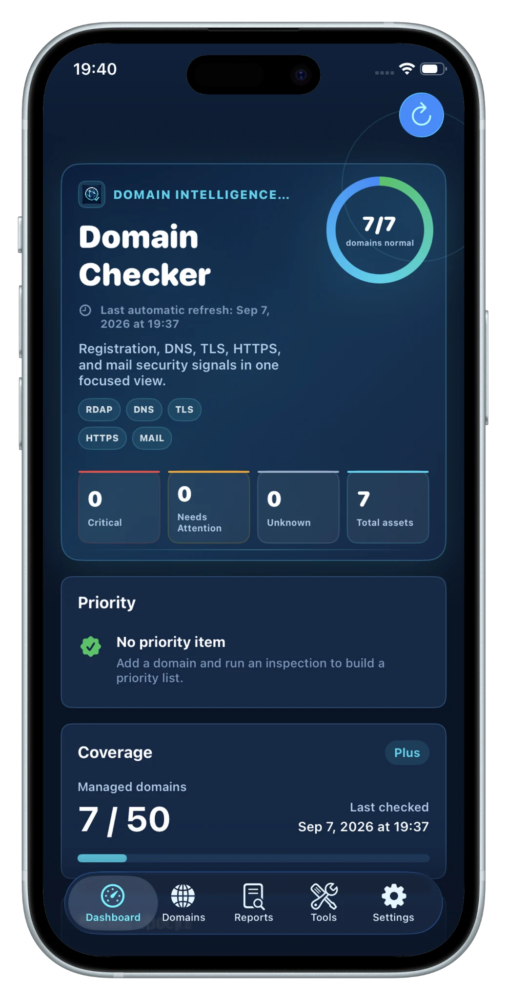
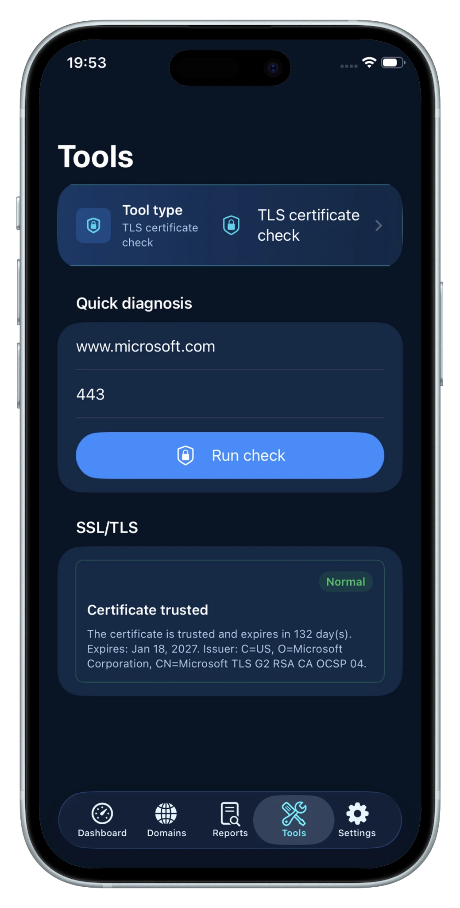
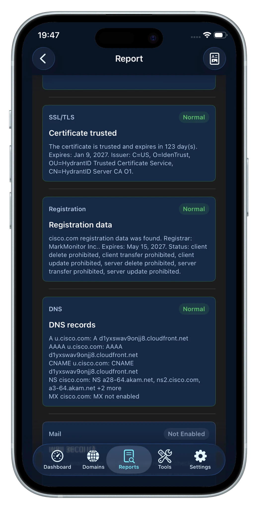

注册与到期
查看公开 RDAP 注册信息、到期日期、剩余天数、域名状态，以及可获取时的注册商信息。
域名健康检查工具
集中查看域名到期与注册信息、DNS 记录、HTTPS 与 TLS，以及邮件安全检查。专为 iPhone 与 iPad 设计，结果清晰、数据本地优先。

功能
查看注册与到期信息、检查 DNS 记录、测试 HTTPS 与 TLS、核对邮件安全，并把结果整理成一份易读的健康报告。
查看公开 RDAP 注册信息、到期日期、剩余天数、域名状态，以及可获取时的注册商信息。
以结构化方式查看 A、AAAA、CNAME、NS、MX、TXT、SPF、DKIM 和 DMARC 相关记录。
测试可达性、HTTP 响应、TLS 握手和证书详情，并支持自定义 HTTPS 服务端口。
快速看出正常项和需要关注的问题，并可使用 JSON 完整备份或导出易读的 PDF 报告。
APP 体验
把常用检查和重复诊断留在设备上，不必每次都在多个查询网站和浏览器标签之间重新整理流程。

快速运行证书与服务检查，无需每次重新组合不同的在线查询工具。

把注册、DNS、HTTPS、TLS 与邮件结果整理成结构化报告，并清楚区分需要关注的项目。
隐私
域名资产清单和报告保存在本地应用数据中。不需要云账号，只有在你主动导出时才会创建备份文件。
流程
添加域名或 URL，运行检查，查看结构化结果；只有需要保存或分享时，再导出报告与备份。
直接粘贴域名、URL 或明确的服务端口。
检查所选资产的注册信息、DNS、HTTPS、TLS 和邮件安全信号。
按注册信息、DNS、HTTP、TLS 和邮件分类阅读结果。
使用 JSON 保存完整数据，并导出易读的 PDF 报告。
OPSHOME 基础设施工具集
OpsHome NOC 提供可用性监控、私有基础设施、Docker Probe、Synology、Proxmox、VMware、Linux 主机、事件、告警、历史数据与 Web Console。